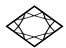
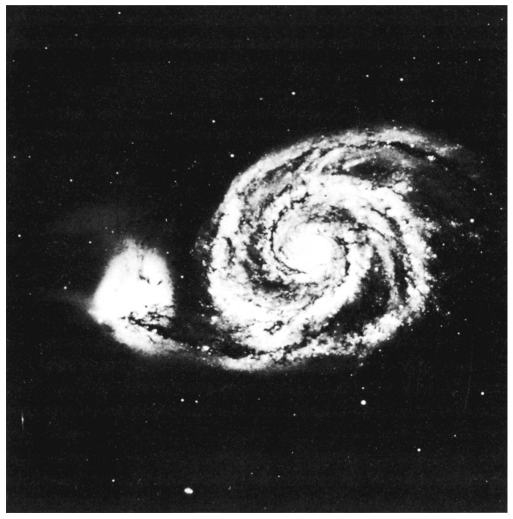
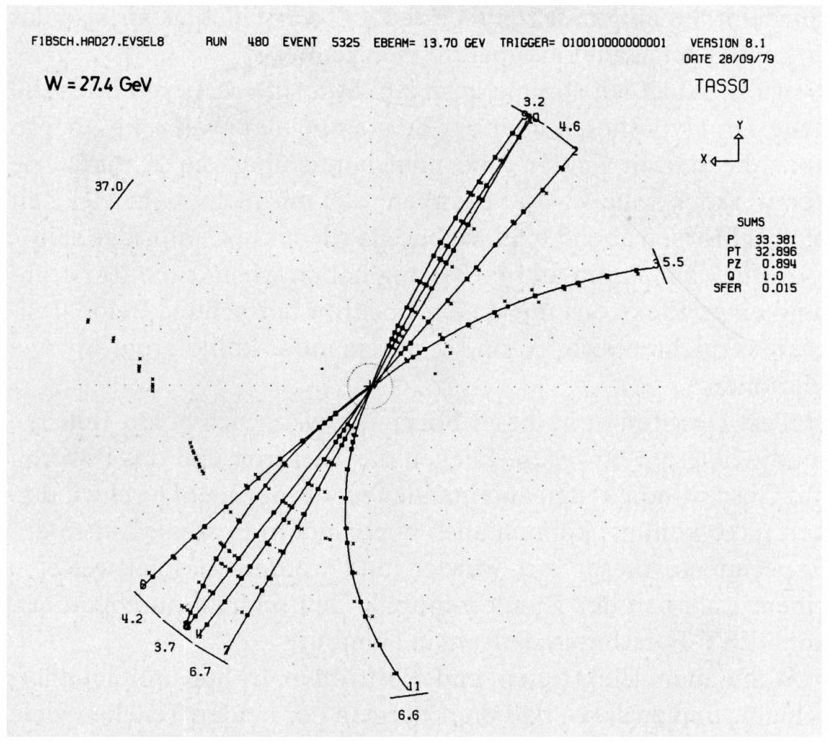
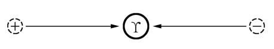
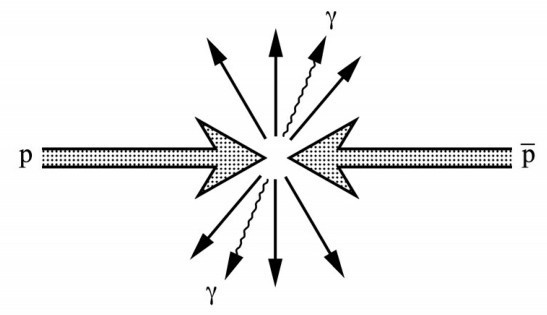
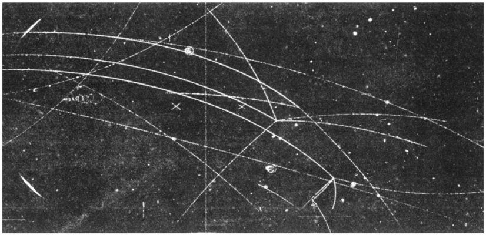
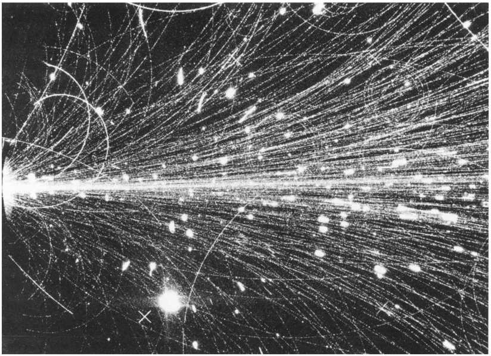

第二十章我们到达目的地只用了20分钟。“好运”是家小而舒适的饭馆，就位于侏罗山下的圣让-德贡维勒村庄。老板帮我们找了一张靠角落的桌子坐下，在那儿我们不受干扰。爱因斯坦仔细看了酒水单之后，我们听从他的建议点了一瓶“教皇新堡”葡萄酒。我们从菜单选了一道我以前吃过并可以热心推荐的鹿肉。放下酒水单，爱因斯坦立即回到反物质的话题上来。
爱因斯坦： 你已经不止一次谈及物质和反物质之间的对称性。然而，当我观望宇宙时，我看不到这样的对称性。在我们周围，我看到的全是物质——我看见了我们三个人，这张桌子，我们呼吸的空气。甚至我们正在等待的鹿肉也更有可能是鹿身上长的，而不是反鹿身上长的。我们生活在物质世界。我们为什么在宇宙中看不到反物质？或者你要告诉我说在外太空某处存在由反物质组成的恒星和行星？
哈勒尔： 你提出了一个重要问题。我恐怕即使在今天，我们对你的问题也没有一个满意的答案。但是我可以引用几点事实。一个由反物质组成的星体看起来就像一个正常星体。不论来自物质粒子还是反物质粒子，它的光芒都是完全相同的。
牛顿： 那么在银河里面也许存在一些反星体？有没有可能我们的银河系包含一半物质和一半反物质？平均而言，物质和反物质的数量刚好一样多，而且你先前谈及的物质和反物质之间的对称性至少在平均意义上将会实现。我们处在一个物质行星上纯粹是巧合，某些其他文明社会也许居住在一个反物质行星上。
哈勒尔： 但是实际情况并非如此。如果银河系某处存在一个反星体，我们就会目睹湮没频繁发生的事件，原因是反星体不可避免地会与它周围的正常物质相接触。结果会有许多高能光子发射出来。寻找这种类型的伽马射线源的努力一直在进行，但是没有成功。因而我们如今相当有把握，至少在我们的银河系不存在反物质，除了在正常粒子相撞中产生的为数不多的反粒子，例如安德森发现的正电子。
在离这儿只有几千米远的CERN，他们产生了大量反质子。我们可以毫不夸张地说，CERN和芝加哥附近一个类似的实验室，费米国家加速器实验室，是我们的银河系中仅有的你能找到反质子以相当大数量存在的地方。但即便在那里，我们涉及的也是极小的、肉眼看不见的数量。
即使数量上像1克这么小的反物质也不会以浓缩的形式存在于银河系的任何地方。而且我们应该为银河系不存在反星体而感到高兴。牛顿教授，假如自然界按照你的建议行事，以对半混合的方式用星体和反星体构造银河，那么我们或许就根本不存在了。地球会不断地受到来自湮没过程的高能质子的轰击，那将对我们这个行星上的生命造成灾难性的后果。说不定生命根本就不会进化出来。
在20世纪，当银河系只含有物质这一点变得明朗之后，自然就有人提出在太空中也许存在其他仅由反物质组成的银河系。但是至今我们确信情况并非如此。有些过程会导致在银河系之间交换少量的物质，但是在已知的关联情形中并没有观测到湮没过程。这最有可能意味着宇宙——远到我们用今天的望远镜所能看见的范围——只由物质组成。大自然看来歧视反物质。在我们的物理实验室，反物质粒子肯定可以同物质粒子对称出现，但是它们在宇宙的构造中似乎没有扮演什么角色。

图20.1 一个遥远的星系在过去的某个时候同另一个较小的星系相撞。该过程伴随着强烈的无辐射的物质交换，暗示两个星系都由物质组成，并且即使是遥远的星系也是由物质而非反物质组成的。
牛顿： 然而，肯定存在某些假说试图解释这一奇怪的现象。倘若我今天还能从事物理学研究，这类问题恰好合我的口味。
哈勒尔： 是有许多假说。一个有趣的理论以大约150亿年前的所谓大爆炸（Big Bang）为出发点，它或许真能解决问题。依照这一理论，物质和反物质最初是对称存在的。可是该对称性并不完美，物质粒子的数目稍微超过了反物质粒子的数目——每100亿对物质和反物质粒子多出来一个物质粒子。这些粒子对经过一定的时间互相湮没掉，最后只剩下了多余的物质粒子。我们的世界以及我们自身都源自那些剩余的物质粒子。
由于上菜，我们的对话被打断了。我们暂时全神贯注地享受美食。然后爱因斯坦重新开始了讨论。
爱因斯坦： 哈勒尔，你先前提到了这种奇特的原始爆炸，但是我承认我并不真懂有关失踪的反物质的来龙去脉。首先，为什么最初物质比反物质多？到底什么是大爆炸？我们能肯定曾经发生过原始爆炸吗？
哈勒尔： 我们不应该偏离我们的主题太远——还记得吧，我们想做的是专注于相对论和与之密切相关的事情。如果我们进入宇宙学，我们不久就会忘掉最初的话题。我们可能花上几天，也许几周的功夫来讨论天体物理学、粒子物理学和宇宙学的复杂问题。
爱因斯坦： 你或许是对的。我们改日再讨论大爆炸吧。
牛顿： 我同意。即使最新的关于世界起源的假说对我来说也是非常有趣的，有关反物质的确凿事实也是如此。我必须还要记住明天晚上我得赶回剑桥去。那么让我们回到反物质。到目前为止，我们只考虑了电子和正电子的湮没。当一个电子和一个正电子对撞时，它们相互摧毁对方，放出两个光子。
哈勒尔： 那只有当两个粒子相当缓慢地运动时才是对的。当电子和正电子以接近光速的速度对撞时，会导致不同的过程。这类实验已经在好几个地方做过了，比方说，在汉堡一个叫做DESY（德意志电子同步加速器）的德国国家实验室就开展过有关的实验。
如果我们使电子和正电子以许多个GeV的能量迎头相撞，湮没通常是以一个小火球的形式发生。像凤凰涅槃那样，出现大量基本粒子，包括质子和反质子。一个必须满足的条件是，所有产生出来的粒子的能量之和必须等于最初的电子和正电子的能量之和。总能量保持不变。
甚至有的反应产生出很重的粒子。让我给你们举个有启发性的例子。如果我们使电子和正电子各携带4.7GeV的能量并相互对射，它们将几乎以光速碰到一起。一个新粒子可以在碰撞中产生，它的质量刚好等于相撞粒子的总能量，即9.4GeV。这样一个粒子，大约10倍于一个质子那么重，是1977年在美国进行的一个不同的反应中发现的，但是大约1年之后它在DESY实验室的电子正电子湮没中被观测到了。它现在被称做宇普西隆，或者“Υ粒子”。

图20.2 一个电子—正电子湮没事件，其中对撞粒子的总能量等于27.4GeV。在此过程中，产生了11个带电粒子。该事件是由德国汉堡DESY实验室的TASSO合作组于1979年记录下来的。

图20.3 一个电子和一个正电子都携带4.7GeV的能量，它们相互碰撞，在此过程中形成一个重的Υ介子。由于这个介子的质量等于对撞电子的总能量，它产生之后处于静止状态。

图20.4 一个质子—反质子湮没事件，随后发射出许多粒子，其中大多数是介子——与电子—正电子湮没不同，后者常常只有两个光子发射出来。
牛顿： 产生这么重的粒子应该被视为爱因斯坦方程的一个激动人心的证明，原因是电子和正电子的所有动能都转化成了新产生的粒子的质量。
爱因斯坦： 这个粒子在它产生以后会怎样？它就呆在那儿吗？
哈勒尔： 根本不会。它存活很短一段时间后就衰变成其他粒子了，它甚至可以转回到一个电子和一个正电子。不过，它的衰变也能够带给我们一个质子和一个反质子，一个中子和一个反中子，或者多种其他粒子。
牛顿： 这些超重粒子存活这么短的时间意义何在呢？比如说，我们对Υ粒子都知道些什么？
哈勒尔： 你的问题就像我们先前略微提到的宇宙学，会导致同样进退两难的局面。倘若我们陷入粒子物理学的细节，那么仅仅得到一个不完全的概貌也要花上几天的时间。我的例子只是想要说明，现代粒子加速器可以用来从诸如电子和正电子等轻粒子的碰撞过程中产生很重的粒子。而那必定被看作爱因斯坦质能方程的最不寻常的应用之一，就像艾萨克爵士刚才对我们说的那样。

图20.5 一张气泡室照片显示反质子在气泡室气体中撞击原子核后湮没掉了。从左侧进入气泡室的三条弯曲轨迹应归于运动相对缓慢的反质子。这些反质子中的每一个最终都会击中一个原子核，在此例中是一个质子。在随后发生的湮没过程中，产生出好几个介子。中央的反质子的径迹清晰可见，一直延伸至一个湮没顶点，四个带电介子的轨迹由此而生。（承蒙CERN惠允。）
牛顿： 我们已经几次谈到了电子—正电子湮没。但是当一个质子同一个反质子碰撞时，会发生什么情况？那会像前面的情形，导致两个光子发射出来吗？
哈勒尔： 或许会发生。如果这两个粒子在湮没前几乎处于静止状态，那么总的可用能量只不过是质子质量的2倍，即约1.88GeV。原则上，这一能量可以在离开湮没区的两个光子的能量中被重新发现。
然而，在实际做实验的时候，研究人员经常发现十分不同的过程发生了。整个系列的粒子产生出来了，包括光子以及带电的和中性的有质量粒子。我实在无法详谈这一现象的细节，因为那不得不涉及碰撞粒子的结构。质子毕竟具有内在结构，它与电子的结构很不一样。
爱因斯坦： 但是他们发现了哪种粒子？电子和正电子？
哈勒尔： 他们经常发现的是我们甚至没有讨论过的粒子，叫做π介子。不过在我讨论这些粒子之前，我应该提及：它们常常在质子乃至核子相互对撞的时候产生。看看这张照片，它是一个特别高能量的碰撞。
爱因斯坦和牛顿饶有兴趣地注视着我放在桌子上的照片（见图20.6）。它显示了一个相互作用的末态，其中被高度加速的硫元素的原子核射到金原子核上。硫的总能量为6400GeV，而金处于静止状态。

图20.6 在极左边，一个高度相对论性的硫原子核同一个静止的金原子核发生碰撞。硫射弹的能量为6400GeV。在此过程中产生了上百个新粒子，而两个初始原子核都被打碎了。用以摄影记录的非常专门的探测器叫做流光室。（承蒙CERN惠允。）
爱因斯坦： 上帝啊，从相互作用中产生了几百个粒子。
哈勒尔： 你在这儿看到的很多径迹只不过是最初作为硫原子核一部分的质子，它们从左侧进来。但是大部分径迹是由在碰撞中产生的介子造成的。
牛顿： 爱因斯坦，它们再一次与你的公式相符。在我看来，好像这些介子很容易出来。当质子或原子核相撞时，介子显然会轻而易举地产生，且数量不菲。我们只须确定有足够可利用的能量来保证爱因斯坦的公式得到满足。
爱因斯坦： 哈勒尔，请告诉我们有关这个奇特的新型粒子的更多情况吧。
但就在这时，饭馆老板的妻子送甜点来了。不久以后，我们离开了这个招待周到的地方。满月当空，侏罗山映射着一片月光。爱因斯坦想要走几步穿过圣让-德贡维勒的街道和那一边的草地。待到我们返回CERN的招待所时，已经快到半夜了。